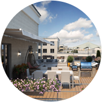
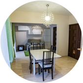
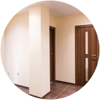
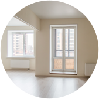
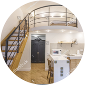

<div class="sect sect_3">
	<div class="sect_content">
		<div class="wrapper">
			<div class="row">
				<div class="col-8 off-4">
					<div class="sect_header">ЭТО <span class="b">МНОГООБРАЗИЕ</span> ВЫБОРА</div>
					<div class="sect_desc">Мы использовали только высококачественные строительные и отделочные материалы, разработали удобные и рациональные планировки и придумали 2 варианта отделки «под ключ», чтобы вы могли быстрее переехать в свой новый дом. </div>
				</div>
			</div>
					

			<div class="sect_block_list row-fluid aligncenter">
				<div class="sect_block col-3">
					
					<div class="sect_block__title">КВАРТИРЫ <br>С ТЕРРАСАМИ</div>
					<div class="sect_block__desc"><a href="javascript:;" class="close"></a>Квартиры данной уникальной планировки расположены на восьмых этажах домов. Вашему вниманию предлагаются варианты с открытыми террасами, площадью до 100 кв.м – пространством, где вы сможете воплотить ваши самые смелые замыслы: организовать летнюю BBQ-площадку, цветник или игровую зону для детей на открытом воздухе.</div>
				</div>

				<div class="sect_block col-3">
					
					<div class="sect_block__title">КУХНИ-ГОСТИНЫЕ <br>ДО 30 м2</div>
					<div class="sect_block__desc"><a href="javascript:;" class="close"></a>Светлая и просторная кухня-гостиная, площадью до 30 м2 даст возможность всем домочадцам комфортно собираться вместе и проводить больше времени всей семьей в уютной общей комнате. Если есть необходимость увеличить количество комнат в квартире, при наличии необходимых согласований, это помещение может быть разделено на два. </div>
				</div>

				<div class="sect_block col-3">
					
					<div class="sect_block__title">ВЫСОКИЕ <br>ПОТОЛКИ</div>
					<div class="sect_block__desc"><a href="javascript:;" class="close"></a>Высота потолков в квартирах ЖК NEWПИТЕР соответствует стандартам комфорт-класса и составляет 2,75 м, что, безусловно, дает дополнительное ощущение простора и «света». </div>
				</div>

				<div class="sect_block col-3">
					
					<div class="sect_block__title">ВОЗМОЖНОСТЬ <br>ПЕРЕПЛАНИРОВКИ</div>
					<div class="sect_block__desc"><a href="javascript:;" class="close"></a>Внутри наших квартир нет несущих стен – вы можете делать перепланировку на свой вкус и исходя исключительно из своих потребностей.</div>
				</div>

				<div class="sect_block col-3">
					
					<div class="sect_block__title">ВОЗМОЖНОСТЬ СДЕЛАТЬ <br>РЕМОНТ ПОД ЗАКАЗ</div>
					<div class="sect_block__desc"><a href="javascript:;" class="close"></a>Чистовая отделка выполнена из высококачественных материалов и представлена в двух вариантах: в классическом и скандинавском стилях. Воплощение обеих концепций чистовой отделки в жизнь вы можете увидеть в шоу-румах, представленных в нашем жилом комплексе.</div>
				</div>

				<div class="sect_block col-3">
					
					<div class="sect_block__title">ВОЗМОЖНОСТЬ СОЗДАНИЯ <br>ДВУХУРОВНЕВЫХ КВАРТИР</div>
					<div class="sect_block__desc"><a href="javascript:;" class="close"></a>На первых этажах расположены квартиры с уникальной высотой потолков – до 4.7 м, что позволит вам спроектировать двухуровневое пространство, даст максимальную свободу для творчества, и позволит сделать ваш дом по-настоящему особенным.</div>
				</div>
			</div>
		</div>
	</div>
</div>